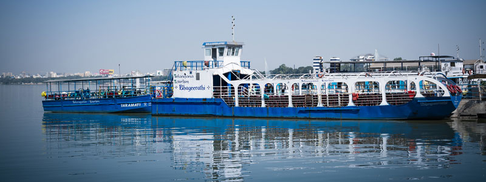
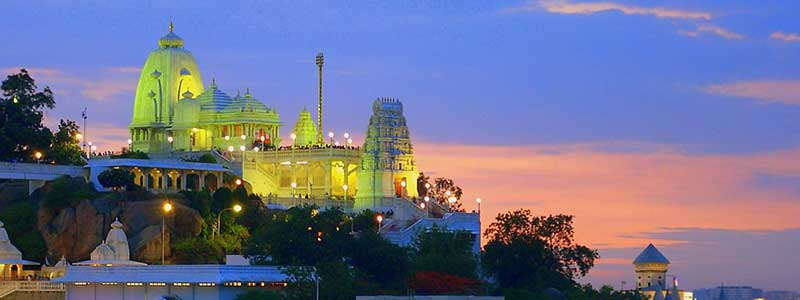
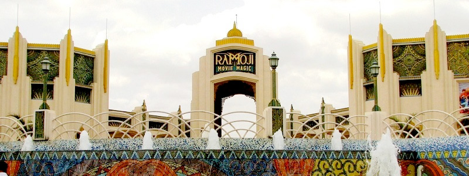
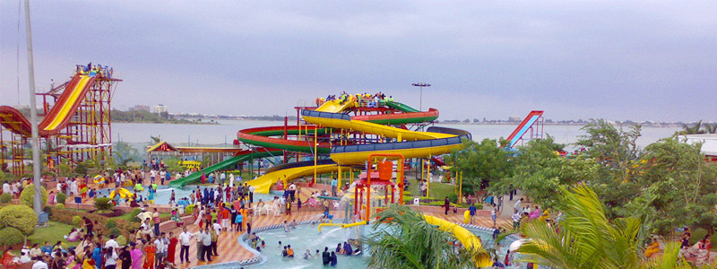

Some of the tourist sopts are:
- Hussain Sagar
Connecting the twin cities, Hussain Sagar Lake boasts of being the largest artificial lake in Asia. On the tributary of Musi River, it was excavated during Ibrahim Quli Qutub Shah’s reign, in 1562 AD. It has got its name after Hussain Shah Wali.
The main attraction is 16 m high white granite statue of Lord Bhudda with a weight of 350 tonnes, situated at the middle of the lake. The lighting show here is worth watching.

-
Birla Mandir
Located atop 280-foot-high hillock of Kalapahad, the beautiful Birla Mandir has derived its name from the industrialist Birlas who have constructed Birla temples in various parts of the country.
Constructed in 1976, it is said it took close to 2000 tonnes of white marbles to build this stunning temple which was brought from Rajasthan. It has drawn its architecture from the amalgamation of three known architectural designs - South Indian Architecture, Utkal temple Architecture and Rajasthani Architecture.
The temple has 11 ft. tall statue of Lord Lakshminarayana with a magnificent lotus carved around it. It also has separate shrines for deities such as Venkateswara, 'Padmavati' and 'Andal' as well. The complex also houses a separate temple of Lord Bhudda.

-
Ramoji Film City
Since 1991, Ramoji Film City has been alluring tourists from every corner of the country. One of the largest film studios in the world it has the capacity to house almost 50 film units within a given point of time.
It is also listed in Guinness Book of World Records as well. Spread over 2500 acres, it is situated about 30 km away from Hyderabad. Its brilliant architecture and sound technical facilities make it suitable for all the pre and post production of a film.
Its various sets like London Street, Hollywood sign, Japanese gardens, etc; landscapes; vintage buses; and many other features such as Filmi Duniya, Action, Interactive Entertainment, etc, makes a trip to Ramoji memorable.

-
Jala Vihar
Since 1991, Ramoji Film City has been alluring tourists from every corner of the country. One of the largest film studios in the world it has the capacity to house almost 50 film units within a given point of time.
It is also listed in Guinness Book of World Records as well. Spread over 2500 acres, it is situated about 30 km away from Hyderabad. Its brilliant architecture and sound technical facilities make it suitable for all the pre and post production of a film.
Its various sets like London Street, Hollywood sign, Japanese gardens, etc; landscapes; vintage buses; and many other features such as Filmi Duniya, Action, Interactive Entertainment, etc, makes a trip to Ramoji memorable.
